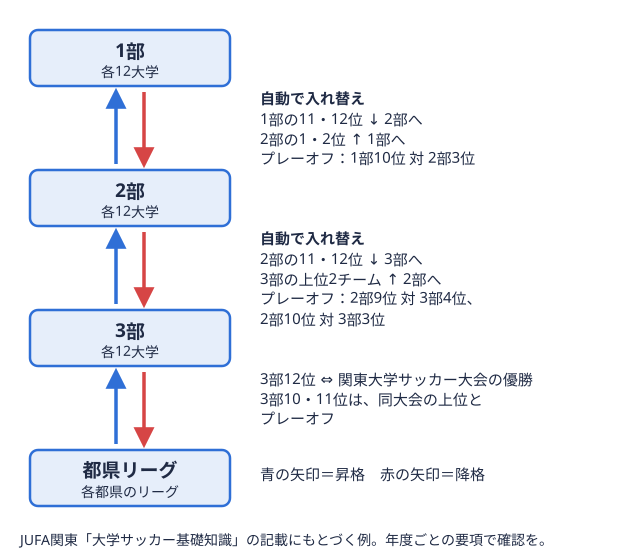

キャリア 2026-11-18
大学サッカー部出身者は広告業界に向いている？評価されるポイントとキャリアの築き方
就職活動で広告業界というと、クリエイティブな発想力やマーケティングの専門知識が求められるイメージを持ち、最初から選択肢に入れていない体育会サッカー部出身の学生は少なくありません。しかし実際には、広告会社の営業・アカウントプランナー職を中心に、体育会系学生を積極的に採用する企業は多くあります。この記事では、大学サッカー部での経験が広告業界でどのように活きるのか、職種の選択肢とあわせて整理します。
なぜ広告業界で体育会系出身者が評価されやすいのか
成長を続ける広告市場と多様化する職種
電通が発表した「2024年 日本の広告費」によれば、2024年の日本の総広告費は7兆6,730億円（前年比104.9%）で、3年連続で過去最高を更新しました。なかでもインターネット広告費は3兆6,517億円（前年比109.6%）まで伸び、総広告費に占める割合は47.6%とほぼ半数に迫っています。マスコミ四媒体広告費も2兆3,363億円（前年比100.9%）と3年ぶりに前年を上回りました。デジタル領域の拡大にともない、総合広告会社だけでなくデジタル広告代理店やハウスエージェンシーなど採用の受け皿となる企業の種類も増えており、業界未経験でも挑戦できる求人が広がっています。
大手企業で高まる体育会出身者の採用比率
東洋経済オンラインの報道では、体育会に所属する大学生は全国の大学生のうちわずか8%にすぎないにもかかわらず、大手企業のなかには新卒採用の20〜30%を体育会出身者が占める企業も少なくないと紹介されています。広告会社の営業・アカウントプランナー職は、証券・不動産業界などと並んで体育会系人材への根強い人気が残る分野のひとつとされています。
サッカー部で培われる経験と広告業界で活きるポイント
目標達成に向けて努力し続ける姿勢
採用担当者が体育会出身者を評価する理由として、目標達成に向けて努力できること、礼儀正しくコミュニケーション能力が高いこと、「勝ち癖」がついていることなどが挙げられています。リーグの勝ち点順位を決める点数。勝つと3点、引き分けで1点、負けると0点が加わり、合計が多いほど上位になる。用語辞典で見るや昇格下の階層から、上の階層に上がること。例えば2部のチームが、翌年から1部で戦うことになる。 
礼儀正しい対人対応とプレッシャーへの耐性
部活動では、監督・コーチや先輩・後輩など、立場の異なる相手との礼儀正しいコミュニケーションが求められます。広告会社の営業職では、クライアント企業の担当者から社内のクリエイティブ・デジタル部門まで、立場の異なる関係者と調整しながら案件を進める場面が多く、礼儀を重んじる姿勢や物怖じしない対人対応は実務でも活きやすいポイントです。
チームでの役割分担から培われる連携力
ポジションごとに役割が異なるサッカーでは、自分の役割を果たしながらチーム全体の動きに合わせる力が求められます。広告業界の仕事は営業担当者だけで完結することは少なく、プランナーやクリエイティブ担当者など複数の立場の人と連携して一つの案件を仕上げていく点で、チームスポーツで培われてきた連携の経験が重なります。
広告業界で選択肢となる職種
総合広告会社の営業・アカウントプランナー
クライアント企業の課題を聞き取り、広告施策の企画・提案を進める営業・アカウントプランナー職は、体育会系学生の採用が多い職種のひとつです。専門知識は入社後の研修で学べる求人も多く、文系出身者でも挑戦しやすい分野とされています。顧客との信頼関係づくりが重視される点では、大学サッカー部出身者は営業職に向いているかで紹介した傾聴力・継続力がそのまま活きる職種です。
デジタル広告代理店の運用・営業職
運用型広告の戦略立案から運用・改善までを担うデジタルアカウントプランナーなどの職種では、職種未経験可の求人も見られます。データを見ながら施策を調整し続ける仕事であり、練習と試合の振り返りを積み重ねてきた経験が活かしやすい領域です。
ハウスエージェンシー・専門広告会社
特定の業界やメディアに強みを持つハウスエージェンシーや専門広告会社も、広告業界を目指す上での選択肢になります。会社ごとに得意とする領域や社風が異なるため、総合広告会社と比較しながら自分に合う規模・社風を見極めることが大切です。
広告業界を目指す上で意識しておきたいこと
「体育会だから」だけに頼らない業界理解
体育会系学生への期待が根強く残る一方で、採用コンサルタントからは「体育会系なら誰でも採用したい時代は終わった」との指摘もあります。大企業の人事が求めているのは、体力やメンタルの強さに加えて、部活動での経験をビジネスの成果に置き換えて語れる学生だとされています。志望する企業がどのような広告領域に強みを持ち、どのような案件を手がけているのかを調べたうえで、自分の経験と結びつけて語れるように準備しておくことが欠かせません。
自己分析と業界比較を並行して進める
広告業界を選択肢に入れる場合も、部活動の経験を漠然と語るのではなく、どのような場面でどんな力を発揮してきたかを言語化しておくことが重要です。大学サッカー部の経験でガクチカ・自己PRを書くコツや体育会サッカー部出身者に向いている仕事とは？もあわせて確認し、広告以外の業界とも比較しながら自分に合った進路を見極めていきましょう。
まとめ
広告市場の拡大とデジタル領域の多様化を背景に、広告業界では目標達成への努力や対人対応力、チームでの連携力といった体育会系学生の資質が評価されやすい状況が続いています。大学サッカー部で培った経験は、総合広告会社やデジタル広告代理店の営業・アカウントプランナー職を中心に幅広い場面で活かすことができます。一方で、体育会系という属性だけに頼らず、企業研究や自己分析を重ねることも欠かせません。サッカーマニアでは、関東・関西・東北・北信越の大学サッカーリーグの仕組みや結果まとめを日々発信していますので、あわせてご覧ください。
---
出典：電通「2024年 日本の広告費」に関する報道（Impress Watch、Advertimes）、東洋経済オンラインによる体育会出身者の新卒採用比率に関する報道、president.jp・hataractive.jpによる広告業界の体育会出身者採用に関する報道をもとに編集部作成
体育会出身の転職・キャリア相談はこちら。
部活を続けながら、就活も進めたい方へ
体育会の学生のための就活相談です。無料で、メールアドレス・学年・所属の入力だけで始められます。